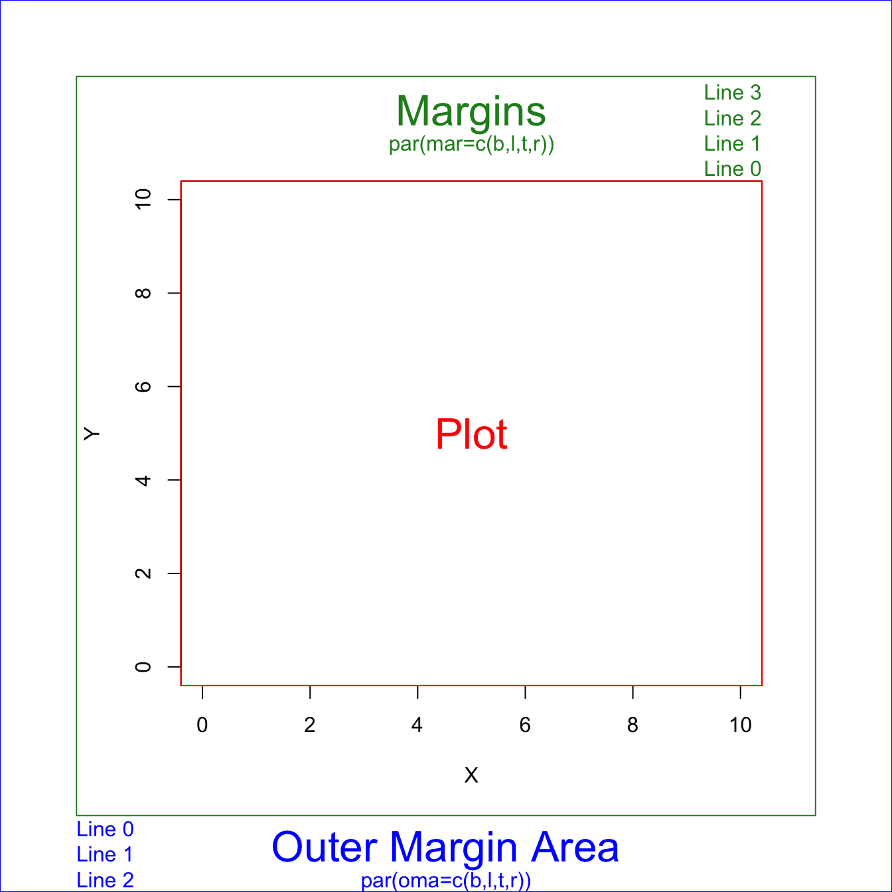

Chapter 7 Graphics
Graphic Parameters
par() permanently set global graphic parameters in the current session. Doesn’t apply to external graphic devices, e.g., x11.
One nice looking setting:
marinner margins inside the plot area. Use this to set spacing between subplots. 内边距omaouter margins outside the plot area. If it is a multi-panel figure, use this to set spaing for the whole figure. 外边距It takes a little trial-and-error to hit on margins that produce the desired spacing.
If you want all of your panels to have plots that fill the same area, then the
bottom+topandleft+rightmargins need to be the same in all panels. In the following example, the sum is 0.4 for both, but bottom+top does not need to equal left+right.oma和mar是叠加的关系。如果有任何图的元素被chop off, 增加内边距。these parameters can also be set inside
plot. When useplot.xts, parameters set usingparare not honored, have to specify inside theplot.xtsfunction.plot.xtssetmar = c(3, 2, 0, 2). So any settings before are overwritten.
Note that
pardoes not work forggplotfigures, must set margins usingtheme(plot.margin=margin(t = 0, r = 0, b = 0, l = 0, unit = "pt")).
Q: Axis title got chopped off.
A: increase mar to enlarge inner margins. Or, reduce mgp[1] to reduce the margin between title and axis.
Q: 需要每个subplot 设置各自边距
A: 每个图开始之前设置par.
Q: add title to each subplot.
A: use text to add text in the graph area.
Q: add text to the whole figure, such as shared y-axis title and figure title.
A: use mtext(text, side). 1-bottom, 2-left, 3-right, 4-top.
# multipanel example
par(mfrow=c(2,2), tcl=-0.5, family="serif")
# Top left panel
par(mai=c(0.2,0.4,0.2,0))
plot(Sepal.Length~Sepal.Width, data=iris, subset=(Species=="virginica"),
xlab=" ", ylab=" ", xlim=c(min.width,max.width), ylim=c(min.length,max.length), xaxt="n")
axis(1, labels=FALSE) # drop the numbers in the x-axis
# add title to subplot
text((max.width-min.width)/2 + min.width, max.length+0.15, expression(italic("Iris virginica")))
# Top right panel
plot.new()
# Bottom left panel
par(mai=c(0.4,0.4,0,0))
plot(Sepal.Length~Sepal.Width, data=iris, subset=(Species=="versicolor"), xlab=" ", ylab=" ",
xlim=c(min.width,max.width), ylim=c(min.length,max.length))
text((max.width-min.width)/2 + min.width, max.length+0.15, expression(italic("Iris versicolor")))
# Bottom right panel
par(mai=c(0.4,0.2,0,0.2))
plot(Sepal.Length~Sepal.Width, data=iris, subset=(Species=="setosa"), xlab=" ", ylab=" ",
xlim=c(min.width,max.width), ylim=c(min.length,max.length), yaxt="n")
axis(2, labels=FALSE) # drop the number in the y-axis
text((max.width-min.width)/2 + min.width, max.length+0.15, expression(italic("Iris setosa")))
# Shared titles for the whole figure
mtext("Sepal Width", side=1, outer=T, at=0.5)
mtext("Sepal Length", side=2, outer=T, at=0.5)A 3x3 multiplot figure
Sometimes for loop works strangely, so use repeat ... break loop.
par(mfrow=c(3,3))
i <- 1
repeat {
plot_data <- confusion_ftable[,,i]
mosaicplot(t(plot_data),
xlab="Observation", ylab="Prediction",
main=sprintf("Group %s", i), cex.axis = 1.2 )
i <- i+1
if (i==10) break
}Graphical Parameters par()
https://www.rdocumentation.org/packages/graphics/versions/3.6.2/topics/par
?par to get help page in R.
par Parameter |
Description |
|---|---|
| oma | outer margin in text lines for the whole plotting area, c(bottom, left, top, right), clockwise from bottom. Mesured in margin lines.By default, par(oma = c(b=0, l=0, t=0, r=0)). oma is set for each panel. Cannot be used for each subfigure. |
| omi | Same as oma, but set outer margins in inches. |
| mar | - Inner margin. A numerical vector of the form c(bottom, left, top, right) which gives the number of lines of margin to be specified on the four sides of the plot. The default is c(b=5, l=4, t=4, r=2) + 0.1. Measured in margin lines. - Margin from axis to figure boundaries, cannot be too small, otherwise axis label could be clipped out and invisible for you. - Change this when you have subplots in one panel; |
| mai | Same as mar, but set inner margins in inches. By default, par(mai = c(1, 0.8, 0.8, 0.4) + 0.02). |
| pch | plot character, 1~25 |
| cex | controls the size of text and symbols in the plotting area with respect to the default value of 1. Plot symbol size, if one number, then all symbols scale to the same level; if a vector of the same length with data, then each point scales accordingly. |
| cex.lab | x- and y-axis title magnification relative to current setting. |
| cex.axis | The magnification to be used for axis text relative to the current setting of cex. |
| cex.main | main title magnification relative to current setting |
| col | controls the color. |
| col.lab | The color to be used for x and y labels. |
| col.axis | The color to be used for axis annotation. |
| mgp | The margin line (in mex units) for the axis title, axis labels (ticks) and axis line. The default is c(3, 1, 0). Negative distances are allowed, resulting in titles and / or labels inside the plotting region. - mgp[1] defines distance between the axis titles and the axes, - mgp[2] defines distance between the axis labels and the axes. - mgp[3] just leave it at 0;Default values are too large. mgp=c(2,0.8,0) looks good. |
| mfrow=c(1,1) | layout of subplots, Multiple Figures drawn by row. c(nr, nc) creates an nr-by-nc layout. |
| xpd=T, default as F | it is OK to plot outside the region, - FALSE: only inside the plot; - TRUE: in the outer plotting area’ - NA: everywhere on your plotting device |
| horiz=T | you want a horizontal legend |
| inset=c(x,y) | move the legend relative to the ‘bottom’ location |
| bty = ‘n’ | Specify the box surrounding the graph area.o: complete box (default parameter), n: no box 7: top + right L: bottom + left C: top + left + bottom U: left + bottom + right |
| las=0 | numeric in {0,1,2,3}. 0 always parallel to the axis [default], 1 always horizontal, 2 always perpendicular to the axis, 3 always vertical. |
| yaxt / xaxt | A character which specifies the y/x axis type. Specifying "n" to suppress plotting the axis text. This is useful when you have multiple panels with shared axis labels and titles. |

Every time you change par, first save the orginal one so that could be easily reset, if needed.
op <- par() # save unchanged original defualt one
par(newsettings) # change to the way you need, newsettings can be tag=value or a list of tagged values
par(op) # reset to the defaultpar() gets reset every time a new device is opened. So use dev.new() and dev.off() to create a new device and close.
par() with no arguments is used to get all the graphical parameters as a named list.
Several parameters can only be set by a call to par(), others can be set as arguments to plot functions. See ?par for which par can only be changed through par().
Tip: When you cannot change parameters through plot functions, change through par(newsettings). Just put it before the plot command, and leave everthing else the same. After the plot, you can restore the settings to default.
For instance, cex.lab doesn’t work in mosaicplot, you just change the font size through par(cex.lab=1.5) and put it before mosaicplot.
Q: How to query values of graphical parameters?
A: Two options: par("cex") or par()$cex.
# query one parameter
> par("cex")
[1] 0.66
# query multiple parameters
> par(c("cex", "omi"))
$cex
[1] 0.66
$omi
[1] 0 0 0 0par(cex.lab=1.2) set cex.lab to 1.2. This will enlarge font size for the plot. Defaults to 1.
Plot example
https://r-charts.com/base-r/axes/?utm_content=cmp-true
x<-1:10; y<-x*x
# Suppress the axis
plot(x, y, xaxt="n", yaxt="n")
# Changing x axis
xtick<-seq(0, 10, by=5)
axis(side=1, at=xtick, labels = FALSE) # Add tick marks
text(x=xtick, par("usr")[3],
labels = xtick, srt = 45, pos = 1, xpd = TRUE) # Add tick mark labels
# Changing y axis
ytick<-seq(0, 100, by=50)
axis(side=2, at=ytick, labels = FALSE)
text(par("usr")[1], ytick,
labels = ytick, srt = 45, pos = 2, xpd = TRUE)plot() function accepts graphical parameters in par to set aesthetics, such as font size, margins. The difference is that settings in plot() apply to current figure, while settings in par apply globally.
plot Parameter |
Description |
|---|---|
type='l' |
what type of plot should be drawn. Default p for points. Other types:l for lines; b for both; o for Both points and lines “overplotted”; |
| main | main title |
| xlab | x axis title |
| xaxp and yaxp | customizing where the ticks of each axis start and end and the number of regions to divide the axis specifying vectors of the form c(start, end, number_regions). |
| xlim and ylim | set axis limits |
| lty | Line types can either be specified as an integer (0=blank, 1=solid (default), 2=dashed, 3=dotted, 4=dotdash, 5=longdash, 6=twodash) or as one of the character strings "blank", "solid", "dashed", "dotted", "dotdash", "longdash", or "twodash", where "blank" uses ‘invisible lines’ (i.e., does not draw them). |
| lwd | line width relative to the default (default=1). 2 is twice as wide. |
| col | default plotting color. - The simplest way is with a character string giving the color name (e.g., "red"). A list of the possible colors can be obtained with the function colors. - Alternatively, colors can be specified directly in terms of their RGB components with a string of the form "#RRGGBB" where each of the pairs RR, GG, BB consist of two hexadecimal digits giving a value in the range 00 to FF. - Colors can also be specified by giving an index into a small table of colors, the palette: indices wrap round so with the default palette of size 8, 10 is the same as 2. Index 0 corresponds to the background color. Note that the palette (apart from 0 which is per-device) is a per-session setting.- You can use an integer without calling a palette. This refers to the default color palette in R. There are only 8 different colors. 1 is black, 2 is red, 3 is green, 4 is blue. Recycle to index the palette. - Add transparency. The rgb() function has an optional 4th argument: rgb(r,g,b,alpha). The value of alpha is between 0 and 1, with 0 being totally transparent and 1 being totally opaque. |
line type
The lattice graphics is useful for conditioning types of plots. Make separate plots for each group.
lattice::xyplot(drinks ~ partyHr | gender, data=survey, ylab="Drinks/week",
xlab="Party hours/week")xyplot()function in the lattice graphics is analogous to as theplot()function in the base graphics.- The
histogram()function is a lattice graphics function that is analogous to thehist()function in the base graphics.
The labels argument of the axis function allows customizing the tick mark labels.
# Change X-axis tick labels
plot(x, y, pch = 19, xaxt = "n")
axis(1, at = seq(round(min(x)),
round(max(x)), by = 1),
labels = 1:11)You can join together two plots with different Y-axis scale increasing the margins of the plot, using par(new = TRUE), creating a new plot without axis or labels and setting a new axis with the axis function.
# Increase the plot margins
par(mar = c(5, 4, 4, 4) + 0.25)
# Data
plot(x, y, pch = 19, ylab = "Var 1")
# Needed to merge the plots
par(new = TRUE)
# More data
plot(x ^ 2, y ^ 2,
col = 4, pch = 19,
axes = FALSE, # No axes
bty = "n", # No box
xlab = "", ylab = "") # No axis labels
# New axis
axis(4)
# Axis label
mtext("Var 2", side = 4, line = 3, col = 4)mtext(text, side, line, adj, at) write text into the margins of a plot.
sideon which side of the plot (1=bottom, 2=left, 3=top, 4=right).lineset the margin line where to set the text, starting at 0 counting outwards. Defaults to 0.adjalignment for each string in the reading direction from 0 to 1, defaults to 0.5. For strings parallel to the axes,adj = 0means left or bottom alignment, andadj = 1means right or top alignment.atto indicate the absolute position where to draw the text based on the corresponding axis. Allows you to specify locations more precisely thanadj.adjuses relative positions.
Plot Symbols
pch plot symbol
20 small solid circle.
21 circle with border and filling. You can colour the inside and outside separately.
https://blog.albertkuo.me/post/point-shape-options-in-ggplot/
1 2 空心圆, 三角形
16 17 实心圆, 三角形
The size aesthetic control the size of points and text, and can be specified with a numerical value (in millimetres) or via a mapping to a continuous variable.
pch 16 midium, 19 large, 20 small
Linetype
The linetype aesthetic can be specified with either an integer (0-6), a name (0 = blank, 1 = solid, 2 = dashed, 3 = dotted, 4 = dotdash, 5 = longdash, 6 = twodash),
Save figures
png(filename, width = 480, height = 480, units = "px", res = 72, ...)
unit: one ofpx,in,cm, ormm. Defaults topx.res: The nominal resolution in dpi (number of dot per inch) for bitmap devices (dpi * inches = pixels). The higher the dpi, the sharper the image.Default res of 72 dpi is too fuzzy. To remove the graininess, use
res=300for a fine-resolution figure.
For the same figure size, the higher the resolution, the larger the zoom of the figure
Suggested routine to find the correct size of your figure using base R:
Zoom the plot pane, adjust to the size you are happy with, right click and choose
Copy Image Address, you will have a url likehttp://127.0.0.1:39903/graphics/plot_zoom_png?width=913&height=563The url provides the aspect ratio of your choice and is a good start point for figure size.
Use 3 times the given size, i.e., width = 913x3, height = 563x3, set
res=300, for a high-resolution figure.